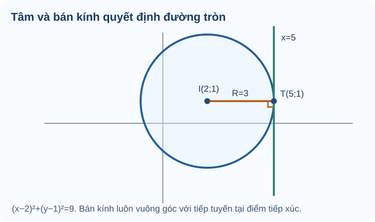

Bài 21. Đường tròn trong mặt phẳng tọa độ
TOÁN 10 · CHƯƠNG VII · KIẾN THỨC SGK KNTT
1. Khám phá kiến thức
Cùng tìm hiểu
Một trạm phát sóng đặt tại \(I(2,1)\) phủ sóng đến khoảng cách 3 km. Vùng được phủ gồm cả những vị trí bên trong, còn đường biên gồm các điểm cách trạm đúng 3 đơn vị: đó là một đường tròn. Ta phân biệt đường tròn với cả hình tròn để hiểu vì sao phương trình của đường biên dùng dấu bằng.
Nếu em đã biết khoảng cách giữa hai điểm, công thức đường tròn gần như tự xuất hiện: \(\sqrt{(x-2)^2+(y-1)^2}=3\). Bình phương hai vế (đều không âm) cho \((x-2)^2+(y-1)^2=9\). Thay vì nhớ riêng từng kí hiệu, em có thể đọc phương trình như câu nói: “khoảng cách từ điểm \((x,y)\) đến tâm I bằng bán kính 3”.
Một đường thẳng có thể không chạm, cắt tại hai điểm hoặc tiếp xúc đường tròn. Tại điểm tiếp xúc, tiếp tuyến vuông góc bán kính: đây là cách dựng phương trình tiếp tuyến từ hình học.
Ví dụ trực quan
Năm tình huống sau sẽ giúp em hiểu bản chất trước rồi mới đến câu Vận dụng và phần Đối chiếu tự mở. Hãy theo từng lời dẫn để biết điều kiện nào làm cho phép tính có ý nghĩa.
1.2.1. Từ khoảng cách không đổi đến phương trình đường tròn
Hãy tưởng tượng một chiếc compa có đầu nhọn cố định ở tâm I và mở đúng một độ dài R. Khi quay, đầu bút M có thể đi tới nhiều vị trí nhưng IM vẫn luôn bằng R. Vì thế đường tròn không phải một công thức tự nhiên xuất hiện, mà chính là tập hợp tất cả điểm thỏa điều kiện khoảng cách ấy.
Biết tâm \(I(a;b)\) và \(R>0\), ta tính bình phương khoảng cách từ \(M(x;y)\) tới I bằng tổng hai bình phương của độ lệch tọa độ. Điều kiện \(IM=R\) trở thành tổng đó bằng \(R^2\). Với tâm có hoành độ âm, dấu trong ngoặc x sẽ là dấu cộng; với bán kính 3, vế phải phải bằng 9 chứ không phải 3.
Vận dụng. Lập phương trình đường tròn có tâm \(I(-2;1)\) và bán kính 3. Hãy tự kiểm dấu của tọa độ tâm, rồi chọn một điểm cách tâm 3 đơn vị để thử phương trình.
Đối chiếu
Đáp án: (x+2)²+(y-1)²=9.
Lý do: IM²=(x+2)²+(y-1)², và R²=3²=9. Cần R=3>0.
Nếu chưa đúng: Mở hướng dẫn tự sửa ngay bên dưới, xem lại bước còn vướng rồi thử một câu cùng kiến thức.
Kiểm lỗi
- Nhận diện lỗi: Từ tâm I(−2;1) và bán kính 3 lại viết (x−2)²+(y−1)²=3.
- Tự chẩn đoán: Điểm (1;1) cách tâm (−2;1) đúng 3 đơn vị; phương trình em viết có nhận điểm đó không?
- Kiến thức gốc: Phương trình diễn đạt IM bằng bán kính: tọa độ M trừ tọa độ tâm trong mỗi ngoặc, và vế phải là bình phương bán kính.
- Tự sửa: Sửa thành (x+2)²+(y−1)²=9; thử điểm (1;1) cho tổng hai bình phương bằng 9.
- Luyện lại: Luyện Core 21-C01
1.2.2. Hoàn thành bình phương để tìm ngược tâm và bán kính
Đôi khi đề bài cho phương trình đã khai triển, chưa thể nhìn ngay ra tâm. Ta chuyển về dạng tổng hai bình phương bằng cách hoàn thành bình phương của nhóm theo x và nhóm theo y. Sau bước này, mỗi ngoặc chỉ độ lệch tọa độ so với tâm; vế phải biểu thị bình phương bán kính, không phải bán kính.
Phải kiểm giá trị \(R^2\) trước khi lấy căn: dương thì có đường tròn bán kính \(R>0\); bằng 0 thì tập điểm chỉ có một điểm; âm thì không có điểm thực. Đây là phép kiểm cần thiết, không phải một bước hình thức có thể bỏ qua.
Vận dụng. Xét \(x^2+y^2-6x+4y+8=0\). Hãy hoàn thành bình phương, tìm tâm, tính bán kính và xác nhận đây thực sự là một đường tròn.
Đối chiếu
Đáp án: (x−3)²+(y+2)²=5, tâm I(3,−2), bán kính √5.
Lý do: x²−6x=(x−3)²−9, y²+4y=(y+2)²−4. Suy ra tổng hai bình phương bằng −8+9+4=5>0.
Nếu chưa đúng: Mở hướng dẫn tự sửa ngay bên dưới, xem lại bước còn vướng rồi thử một câu cùng kiến thức.
Kiểm lỗi
- Nhận diện lỗi: Tìm tâm (−3;2) hoặc gọi R=5 từ phương trình x²+y²−6x+4y+8=0.
- Tự chẩn đoán: Em hãy viết x²−6x=(x−3)²−9 và y²+4y=(y+2)²−4; thử khai triển lại để tìm dấu sai.
- Kiến thức gốc: Tâm đọc từ các ngoặc sau khi hoàn thành bình phương; phải đổi dấu số trong ngoặc và lấy căn bậc hai dương của vế phải.
- Tự sửa: Ta được (x−3)²+(y+2)²=5: tâm (3;−2), bán kính √5; khai triển kiểm lại phương trình cũ.
- Luyện lại: Luyện Core 21-C02
1.2.3. Dựng tiếp tuyến từ bán kính tại tiếp điểm
Một đường thẳng tiếp xúc đường tròn tại T có đúng một điểm chung với đường tròn. Đoạn ngắn nhất từ tâm I đến đường thẳng phải đi qua T và vuông góc với đường; đó chính là bán kính IT. Vì vậy, bán kính là vectơ pháp tuyến của tiếp tuyến, không phải vectơ chỉ phương.
Đọc hình sau để thấy quan hệ giữa đường tròn, bán kính và tiếp tuyến trước khi học công thức.

Cách đọc hình: Tâm \(I(2;1)\) và điểm \(T(5;1)\) cùng tung độ, nên bán kính IT nằm ngang và dài 3. Tiếp tuyến \(x=5\) qua T thẳng đứng, tạo góc vuông với IT. Hãy nhìn đúng điểm tiếp xúc và kí hiệu góc vuông; với một điểm M bất kì, chỉ được viết tiếp tuyến tại M sau khi chứng minh M thuộc đường tròn.
Vận dụng. Đường tròn tâm \(I(1;-1)\), bán kính 5 có điểm \(M(4;3)\). Hãy kiểm điều kiện M nằm trên đường, xác định pháp tuyến IM rồi lập phương trình tiếp tuyến tại M.
Đối chiếu
Đáp án: 3x+4y−24=0.
Lý do: IM=(3,4), IM²=9+16=25=R² nên M thuộc đường. Tiếp tuyến: 3(x−4)+4(y−3)=0 ⇒ 3x+4y−24=0.
Nếu chưa đúng: Mở hướng dẫn tự sửa ngay bên dưới, xem lại bước còn vướng rồi thử một câu cùng kiến thức.
Kiểm lỗi
- Nhận diện lỗi: Dùng IM như một vectơ chỉ phương hoặc không kiểm M có thuộc đường tròn không.
- Tự chẩn đoán: Với I(1;−1), R=5, M(4;3): IM²=9+16 có bằng 25 không? IM=(3;4) vuông góc hay nằm trên tiếp tuyến?
- Kiến thức gốc: Tại điểm M nằm trên đường tròn, bán kính IM là pháp tuyến khác 0 của tiếp tuyến, nên phải lập đường qua M với pháp tuyến ấy.
- Tự sửa: Kiểm M thuộc đường; viết 3(x−4)+4(y−3)=0, tức 3x+4y−24=0 rồi thử lại tọa độ M.
- Luyện lại: Luyện Practice 21-P02
1.2.4. Tại sao cần ba điểm không thẳng hàng?
Nếu chỉ biết hai điểm A và B cùng thuộc đường tròn, ta chưa xác định được tâm: mọi điểm trên đường trung trực của AB đều cách đều A và B. Khi có thêm điểm C không thẳng hàng với A, B, tâm còn phải nằm trên đường trung trực AC. Giao hai đường trung trực cho đúng một điểm cách đều cả A, B và C: đó là tâm đường tròn phải tìm.
Hãy tự phác tam giác ABC và hai đường trung trực của AB, AC để nhìn vị trí tâm. Đây là hình em tự vẽ, không phải hình có sẵn trên trang. Với ba điểm thẳng hàng, hai đường trung trực không có giao điểm xác định đường tròn qua cả ba; phải kiểm điều kiện này trước khi tính bán kính.
Vận dụng. Tìm tâm, bán kính và phương trình đường tròn qua \(A(0;0)\), \(B(2;0)\), \(C(0;2)\). Hãy kiểm lại ba khoảng cách từ tâm bằng nhau.
Đối chiếu
Đáp án: Tâm I(1,1), bán kính √2, phương trình (x−1)²+(y−1)²=2.
Lý do: Trung trực AB là x=1; trung trực AC là y=1. IA²=1²+1²=2; thử B và C đều cho tổng bình phương bằng 2.
Nếu chưa đúng: Mở hướng dẫn tự sửa ngay bên dưới, xem lại bước còn vướng rồi thử một câu cùng kiến thức.
Kiểm lỗi
- Nhận diện lỗi: Lấy trung điểm AB làm tâm rồi quên kiểm điểm C thứ ba.
- Tự chẩn đoán: Với A(0;0), B(2;0), C(0;2), điểm (1;0) có cách đều ba điểm không? Hãy tìm thêm trung trực AC.
- Kiến thức gốc: Tâm đường tròn qua ba điểm không thẳng hàng nằm ở giao hai đường trung trực AB và AC.
- Tự sửa: Tìm trung trực x=1 và y=1, được I(1;1); ba bình phương khoảng cách đến A,B,C đều bằng 2.
- Luyện lại: Luyện Practice 21-P04
1.2.5. Khi nào đường thẳng cắt, tiếp xúc hoặc ở ngoài đường tròn?
Để biết một đường thẳng có bao nhiêu điểm chung với đường tròn, trước tiên tìm khoảng cách ngắn nhất từ tâm I tới đường thẳng d, gọi là h. So sánh h với bán kính R dương: nếu h lớn hơn R, đường ở ngoài; nếu h bằng R, đường tiếp xúc tại chân vuông góc; nếu h nhỏ hơn R, đường cắt tại hai điểm.
Em có thể vẽ thêm ba đường song song đặt gần, đúng và xa tâm so với bán kính để tự thấy trường hợp 2, 1 và 0 giao điểm. Cách so sánh này trả lời nhanh số điểm chung; nếu đề còn hỏi tọa độ, ta phải tìm điểm thỏa cả phương trình đường thẳng và đường tròn, không chỉ dừng ở so sánh khoảng cách.
Vận dụng. Đường tròn tâm \(I(1;2)\), bán kính \(R=3\) và đường thẳng \(d:y=-1\) có bao nhiêu điểm chung? Nếu tiếp xúc, hãy tìm tiếp điểm bằng chân vuông góc.
Đối chiếu
Đáp án: Tiếp xúc; tiếp điểm T(1,−1).
Lý do: Khoảng cách từ I(1,2) đến y=−1 là |2−(−1)|=3=R. Chân đường vuông góc từ I xuống d là T(1,−1).
Nếu chưa đúng: Mở hướng dẫn tự sửa ngay bên dưới, xem lại bước còn vướng rồi thử một câu cùng kiến thức.
Kiểm lỗi
- Nhận diện lỗi: Kết luận hai giao điểm khi khoảng cách tâm đến đường thẳng đúng bằng R.
- Tự chẩn đoán: Với I(1;2), R=3 và d:y=−1, điểm nào trên d gần tâm nhất? Có thể có điểm thứ hai cùng cách I đúng 3 không?
- Kiến thức gốc: So khoảng cách ngắn nhất h với R: h
- Tự sửa: Chân vuông góc T(1;−1) cách I đúng 3; các điểm khác trên d xa I hơn, nên d tiếp xúc tại T.
- Luyện lại: Luyện Practice 21-P03
Thuật ngữ, kiến thức và kỹ năng
Thuật ngữ: Tâm, bán kính, phương trình đường tròn, dạng tổng quát, tiếp tuyến, tiếp điểm và vị trí tương đối.
Sau bài học, em cần: Lập phương trình đường tròn từ tâm/bán kính hoặc ba điểm không thẳng hàng; nhận diện điều kiện bán kính dương khi hoàn thành bình phương; kiểm một điểm thuộc đường tròn rồi viết tiếp tuyến; dùng khoảng cách tâm–đường thẳng để xét vị trí tương đối.
2. Kiến thức SGK
2.1. Phương trình đường tròn
Đường tròn tâm \(I(a;b)\), bán kính \(R>0\) có phương trình:
Phương trình tổng quát \(x^2+y^2+Dx+Ey+F=0\) biểu diễn đường tròn thực có bán kính dương khi
Nếu \(R^2=0\), tập điểm chỉ có một điểm; nếu \(R^2<0\), không có điểm thực. Không gọi hai trường hợp này là đường tròn có bán kính dương.
2.2. Phương trình tiếp tuyến của đường tròn
Xem lại hình ở tab Khám phá: đoạn IT nằm ngang và đường x=5 qua T thẳng đứng. Cách đọc hình đã gắn trực tiếp với SVG, không cần tìm một hình khác ở đây.
Tại điểm \(M(x_M;y_M)\) thuộc đường tròn, tiếp tuyến vuông góc với bán kính \(IM\):
Với đường thẳng \(d\), đặt \(h=d(I,d)\):
- \(h<R\): hai giao điểm;
- \(h=R\): tiếp xúc tại một điểm;
- \(h>R\): không giao nhau.
3. Ví dụ
3.1. Ví dụ — Từ tâm và tiếp điểm tìm tiếp tuyến
Đề bài. Cho đường tròn \((x-2)^2+(y-1)^2=9\) và điểm \(T(5,1)\). Viết tiếp tuyến tại T.
Phân tích: Phương pháp này áp dụng cho tiếp tuyến tại T, nên trước hết phải kiểm T thuộc đường tròn. Khi đó bán kính IT vuông góc tiếp tuyến, vì vậy \(\overrightarrow{IT}=(3,0)\) là một pháp tuyến của đường thẳng cần tìm. Viết phương trình qua T sẽ nhanh hơn giải hệ giao điểm khi tiếp điểm đã cho.
Lời giải. \(I=(2,1)\), \(R=3\). \(IT=3\), nên T thuộc đường tròn. Tiếp tuyến qua T nhận pháp tuyến \((3,0)\): \(3(x-5)=0\), tức \(x=5\).
Kiểm lại: Điểm T thuộc đường tròn, đường x=5 qua đúng T và vuông góc bán kính IT nằm ngang; hình ở tab Khám phá biểu diễn đúng điểm tiếp xúc.
3.2. Ví dụ — Từ phương trình tổng quát tới tiếp tuyến
Đề bài. Với \(x^2+y^2-4x+6y-12=0\), xác định tâm, bán kính của đường tròn và tiếp tuyến tại \(M(5;1)\).
Phân tích: Trước hết phải hoàn thành bình phương để biết đúng tâm và bán kính, đồng thời kiểm bán kính dương. Tiếp theo, kiểm M có thực sự thuộc đường tròn; chỉ khi đó vectơ IM mới là pháp tuyến của tiếp tuyến tại M. Việc kiểm điều kiện này quan trọng hơn học thuộc một công thức tiếp tuyến rời rạc.
Lời giải. Hoàn thành bình phương:
Vậy \(I(2;-3)\) và \(R=5\). Điểm \(M(5;1)\) thuộc đường tròn vì \(IM^2=3^2+4^2=25\). Vectơ \(IM=(3;4)\) là pháp tuyến của tiếp tuyến tại \(M\), nên:
Kiểm lại: \(R\) là bán kính dương, còn \(R^2\) mới là bình phương bán kính. Thay \(M(5;1)\) vào đường tròn cho 9+16=25, nên M thực sự thuộc đường tròn. Thế M vào tiếp tuyến cho 15+4−19=0; pháp tuyến tiếp tuyến là bán kính IM, đúng quan hệ vuông góc.
4. Lỗi thường gặp và cách tự khắc phục
Hai lỗi dưới đây có thể lặp lại trong nhiều bài. Nếu vướng ở một câu Vận dụng cụ thể, hãy mở khung Kiểm lỗi ngay dưới câu đó trong tab Khám phá kiến thức.
4.1. Nhận phương trình suy biến thành đường tròn thực
- Nhận diện lỗi: Sau khi hoàn thành bình phương ra R² bằng 0 hoặc âm vẫn ghi bán kính dương.
- Tự chẩn đoán: Nếu x²+y²=0, có bao nhiêu điểm? Nếu x²+y²+2=0, tổng hai bình phương có thể bằng −2 không?
- Kiến thức gốc: Chỉ R² dương mới xác định đường tròn bán kính thực dương; bằng 0 là một điểm, âm là vô nghiệm thực.
- Tự sửa: Kiểm dấu của vế phải trước khi lấy căn hoặc gọi tên đường tròn; tự giải hai phương trình ví dụ để phân biệt một điểm và vô nghiệm.
- Luyện lại: Luyện lại câu 21-C02 · Luyện lại câu 21-P05
4.2. Nhầm tiếp tuyến tại M với một đường thẳng tiếp xúc cho trước
- Nhận diện lỗi: Biết đường d tiếp xúc rồi tự coi điểm M bất kỳ là tiếp điểm, hoặc dùng IM khi M chưa kiểm.
- Tự chẩn đoán: Đường tròn tâm I(1;−1), R=5 và d:y=4 tiếp xúc tại (1;4); điểm M(4;3) có phải tiếp điểm của chính đường d không?
- Kiến thức gốc: Muốn lập tiếp tuyến tại M phải xác minh \(M\in(C)\) và dùng \(\overrightarrow{IM}\) làm pháp tuyến của tiếp tuyến qua M; hướng tiếp tuyến vuông góc với \(\overrightarrow{IM}\). Muốn biết đường d cho trước có tiếp xúc hay không, dùng \(d(I,d)=R\) nhưng còn phải xác định đúng chân vuông góc làm tiếp điểm.
- Tự sửa: Tách riêng yêu cầu: với M đã cho, kiểm thuộc đường tròn rồi viết tiếp tuyến; với d:y=4, tìm chân vuông góc (1;4) và kiểm bán kính bằng 5, không gán M(4;3) thành tiếp điểm.
- Luyện lại: Luyện lại câu 21-P02 · Luyện lại câu 21-P03 · Bài tự luận liên quan
Học tiếp: Core và Luyện tập · Tự kiểm tra cuối chương.
Nguồn đối chiếu: SGK KNTT tập 2, trang in 43–47; SBT trang 39–41.